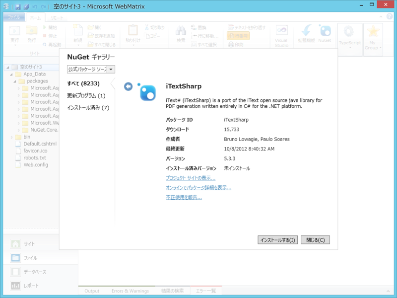
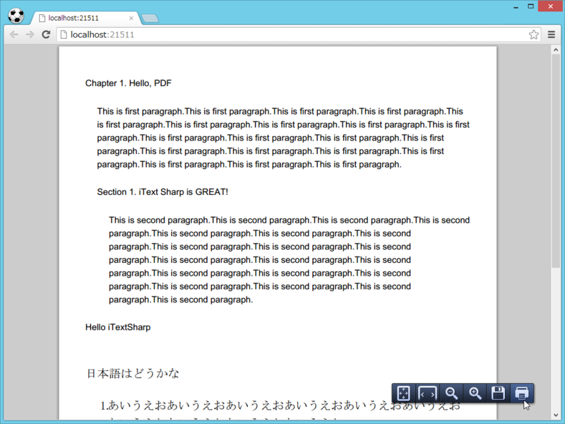

WebMatrix で PDF を出力
公開日：
RazorPDFはASP.NET MVCのRazor ViewEngineを利用してPDFファイルを出力します。
ViewにはiTextXMLというXMLをPDFに変換するライブラリーを使用します。
もともとSparkというViewEngineにあった機能を移植したものになります。
ぱっと探してみましたけど、ソースコードがどうやら公開されていないですね。
Razor と XML の組み合わせで PDF ドキュメントを出力できる。素敵だなぁ。ASP.NET MVC 向けなので、WebMatrix（ASP.NET Web Page）ではちょっと使えなさそうなのが残念だけど。
でも、PDF を吐くだけだったら WebMatrix でもできるよ！（対抗意識
調べてみると、「iTextSharp」というライブラリを使えばよさそう。ラッキーなことに NuGet も用意されていて、ライブラリのインストール自体は簡単。

いつも通り、ASP.NET の「空のサイト」テンプレートでごにょごにょとサンプルを書いてみた。
# Default.cshtml@using iTextSharp.text @using iTextSharp.text.pdf
@{ // ドキュメントを作成 Document doc = new Document();
// 作成したドキュメントと Response.OutputStream を // 結び付ける Writer オブジェクトを取得 PdfWriter.GetInstance(doc, Response.OutputStream);
// 開け、ゴマ！ doc.Open();
// あとは、チャプターを追加してみたり…… var p1 = new Paragraph("Chapter 1. Hello, PDF") { SpacingBefore = 20, SpacingAfter = 20, };
var chapter = new Chapter(p1, 0) { NumberDepth = 0, Indentation = 16, };
chapter.Add( new Paragraph("This is first paragraph.".Times(20)) );
// セクションを追加してみたり…… { var p2 = new Paragraph("Section 1. iText Sharp is GREAT!") { SpacingBefore = 20, SpacingAfter = 20, };
var section = chapter.AddSection(p2, 0); section.Indentation = 16;
section.Add( new Paragraph("This is second paragraph.".Times(20)) ); } doc.Add(chapter);
// パラグラフを追加してみたり…… doc.Add(new Paragraph("Hello iTextSharp") { SpacingBefore = 20, SpacingAfter = 20, } );
// 日本語フォントを用意 var base_font = BaseFont.CreateFont( @"c:\windows\fonts\msmincho.ttc,0", BaseFont.IDENTITY_H, true ); var font = new Font(base_font, 16);
doc.Add( new Paragraph("日本語はどうかな", font) { SpacingBefore = 20, SpacingAfter = 20, } );
// ほかにも、リストとかテーブルが作れる var list = new List(true, 10) { IndentationLeft = 20, };
list.Add(new ListItem("あいうえお".Times(10), font)); list.Add(new ListItem("さしすせそ".Times(10), font));
doc.Add(list);
doc.Close(); // <- 便所の扉と一緒。開けたら閉める！
Response.ContentType = "application/pdf"; }

できてるみたい。有志によるリファレンス iTextSharp クラスライブラリリファレンスの詳細情報 : Vector ソフトを探す！ は必須だなぁ。こういうのがあると、ほんとありがたいよ。
追記
書き忘れたけど、サンプルテキストのコピペでコードが長くなるのが嫌だったので、ちょっとした拡張メソッドを作って使っている。
public static class StringExtension { public static string Times( this string target, int times) { string result = string.Empty;for (int i = 0; i < times; i++) result += target.ToString();
return result; } }
"a”.Times(3) で “aaa” になればうれしい。